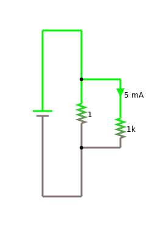
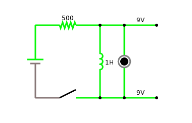

Electric Circuits and Electronic Components
In this chapter we learn about simple electric circuits and simple electronic components. We get to know batteries, switches, resistors, capacitors and inductors. And we will hear about Ohms law and Kirchhoffs circuit laws. Towards the end we will also see logic gates for the first, but not the last time. We also need to learn how to use the circuit simulator.
.
Electronic Components
In the labs of the last chapters we met and made our first electronic components: resistors, capacitors and coils. In general, one distinguishes between:
- active components: such as batteries, transistors and diodes,
- passive components: as there are resistors, capacitors and coils, among many others, and
- electromechanical components: switches, motors, or fuses, for instance.
In this chapter we will learn mostly about passive components. In what follows, we get to know all kinds of electronic components [1], what they do and how they work, and how to connect them together to all kinds of different circuits.
.
AC/DC
The Wikipedia says "AC/DC are an Australian rock band formed in Sydney in 1973 by Scottish-born brothers Malcolm and Angus Young." [2]. You may never have heard of AC/DC (probably a good thing), but you will hear a lot about DC in this class, and a little about AC. DC stands for direct current, the type of current that comes out of batteries. AC stands for alternating current, the type that comes out of the electrical outlets in your walls. DC is a lot simpler and somewhat less dangerous than AC. For now, we will only deal with DC.
.
Electric Circuits
According to the thesaurus, the word circuit is a synonym for circle or cycle [3]. In electronics it referes to a bunch of electronic components, such as batteries, switches and lamps connected together with wires, such that they form a cycle, i.e., there are no loose ends.
As an example, consider what happens when you turn on your light at home. We can represent this in a circuit diagram, which would look something like the following:
In a circuit diagram we represent each circuit by its circuit symbol, and wires are depicted as lines connecting those symbols. Usually, there is a circuit where the electricity comes from: here it is a battery, at home it is AC coming from the electric outlet. Then there is a light bulb and a switch. Each has its diagram. They are all connected by wires. And once you close the switch, the light goes on.
Something we should be aware of is how crossings of wires are depicted in our diagrams. The subtle difference is the dot in the center of the diagram below. It means that in the diagram to the left the wires are not connected, whereas on the right they are.
|
|
|
We can simulate the behavior of electric circuits in a simulator, before we attempt to build the real thing. This is usually a good idea, just to make sure it is working. We will learn about the simulator in the labs.
.
Battery
Let's first start with the battery. There is all different kinds, with all kinds of voltages. But they all have two things in common: they produce DC, and they have a plus and a minus pole.
Now let's briefly talk about them electrons. They are negatively charged, and they are all located at the minus pole of the battery. That is why it is minus. Now there is lots of electrons there (really lots). And electrons don't like each other very much, that is why they repell each other. And if they have a chance to get away, they will. So, if we happen to take a piece of wire and connect the minus pole of the battery to the plus pole, all those electrons will just start running. And since there are so many of them, it gets hot. We call this a "short circuit". Generally, short circuits are bad, so usually we want to slow the electrons down a little. That's why we need resistors.
But before talking about resistors, lets talk a little more about batteries. Basically, most batteries are voltaic cells (named after Alessandro Volta). The most common one's have 1.5 volts, but there is also the 9 volt kind, that we will be using a lot. In the examples here, we will use 5 volt batteries. You can't buy those, but you can take three 1.5 volt batteries, connect them in series and you get 4.5 volts, close enough.
What did I mean, when I just said "we connect them in series"? Well, if we have two (or more) batteries, then we can connect them in several different ways, and the two important one's are to connect them "in series" and "in parallel":
|
|

When we connect batteries
- in series, the voltage doubles,
- in parallel, the voltage stays the same.
Notice, how the plus pole and minus pole of the batteries are connected. It is not a good idea, to connect them in any other way.
.
Short Circuit
Short circuiting [4] a battery is very dangerous! It can cause a fire or even an explosion! That is why we need to know about short circuits and how to recognize them. A short circuit is whenever you directly connect the plus pole and minus pole of a battery:
|
|
Although a 9V battery may seem pretty harmless, if used in the wrong way, it can cause a fire, or in extreme cases they even might explode. Just search for "lithium ion explosion" on Youtube, and you will know what I am talking about.
There are several steps to make sure you do not have a short circuit:
- double check your setup before connecting the battery,
- have somebody else double check your setup (four-eyes principle [5]),
- run your setup in a simulator, most simulators check for short circuits,
- use an ohm-meter in place of the battery, before connecting the battery. If the ohm-meter reads zero ohms, you have a short circuit, and you should not connect the battery.
Despite taking all these precautionary measures, it might still happen that you have a short circuit. How do you know that you have a short circuit? Any of the following are signs that you have a short circuit:
- if it starts smelling,
- if it starts smoking,
- if it gets hot.
Any one of those is a sign that you have a short circuit! In case that happens:
Disconnect the battery!
This is also, why you should never leave an electric circuit unattended. Even for a short toilett break, disconnect the battery! Never leave an electric circuit unattended!
.
Direction of Current
Historically, people were thinking that the carriers of charge were positively charged. They did not know that electrons were negatively charged. So for them, the current was flowing from the plus pole of the battery to the minus pole. Only after J. J. Thomson discovered the electron, did we know [6]. But nobody ever had the guts to change that convention, and hence we are still stuck with this stupid convention. Although we know now it is the electrons that are the charge carriers, and it is the electrons that do the moving, and they really move from the minus pole to the plus pole, the convention still is to say that the current flows from plus to minus. Sorry. Interesting enough it makes no difference.
.
Resistor
Resistors restrict the flow of current. To much current, like to much alcohol, is not good. That's why we need resistors. Resistance is measured in Ohms. Right, that is the Georg-Simon guy our university is named after.
For resistors, there is an interesting relation between current and voltage, which is called Ohm's law [7]:
$$I = {V \over R}.$$
It says that if you have a voltage of 1 volt [V] and a resistance of 1 Ohm [\(\Omega\)], then a current of 1 ampere [A] is flowing. If you increase the resistance, the current goes down, if you decrease resistance, current goes up. If the resistance is zero, you have a problem: we call this a "short circuit".
Like with batteries, once we have more than one resistor, we can place them in series or in parallel:
Resistors have two very important applications:
- Protector, i.e. resistors limit the current flowing through components, hence protecting them, an LED for instance.
- Voltage divider: i.e., resistors can be used to divide a voltage, which is to say, allow us to create an arbitrary voltage between zero and the voltage of the battery.
.
Variable Resistor
Normal resistors are constant, meaning their resistance does not change. However, there are also resistors whose resistance changes. The simplest one being the potentiometer, sometimes also called trimmer. You can change its resistance by either moving a lever (old style, several hundred years ago) or turn a knob (new style, only a hundred years old):
There are also variable resistors that change their resistance depending on temperature, and others that change their resistance depending on light intensity. Others change their resistivity when stretched, others when shouted at, called microphone.
.
Kirchhoff's Circuit Laws
Some people like to play computer games, other people like to do sudokus, others do cross-word puzzles. Electrical engineers, however, love to calculate what the voltages and currents are at different locations in a given electrical circuit.
Since you decided to become an engineer (it was not my decision, mind you!), you got to change habits (no more computer games), meaning you got to learn about them Kirchhoff Laws [8]. Lucky for you, there is only two of them.
We start with the second one, Kirchhoffs Voltage Law: All voltages in a closed circuit add up to zero. The tricky part in the second law is the sign of the voltage. Basically, the direction of the current, gives the sign of the voltage. Except for batteries, there it is reverse. So basically we look for loops, and for every component we have, we write down a voltage. In the example below, that is for the battery, v0, for the first resistor, v1, and for the second resistor, v2. Since those three components form a loop, these voltages have to add up to zero. And since v0 is a battery, it gets a minus sign. Easy.
The other Kirchhoff law, the first one, is also called the Current Law: All the currents coming in and out of a node add up to zero. A node is where a bunch of wires come together. And usually currents going into a node get a plus sign, and currents going out, get a minus sign. In the diagram below there are two nodes. We just worry about the upper one (in this case the lower one gives the same result). As you can see, there is i0 coming into the node, and i1 and i2 are coming out of the node. So, they all must add up to zero, but i0 gets a plus sign, and i1 and i2 each get a minus sign.
In addition, you see that in this last example, there are also two loops. So from Kirchhoff's second law we get two more equations. And turns out, if you are good at math-gymnastics, that is enough to calculate all the voltages and currents in this circuit.
.
Conservation Laws
Now once in a while it is good idea to stop for a moment, and appreciate the philosophical deepness of certain statements. We will do this a couple of times in these lectures, this one being the first time. We call this enlightenment, and at least in my opinion, we still live in the age of enlightenment [9], one of the few great contributions of Europe to the World (although most of the world does not know about it).
Kirchhoffs first law, is nothing but the conservation of charge. Kirchhoffs second law, is simply conservation of energy put in another form. So both of them are conservation laws. Where do conservation laws come from? Well, since we mentioned Georg-Simon Ohms name, let us also mention another persons name, of local origin: Emmy Noether [10]. Emmy Noether proved that:
"If a system has a continuous symmetry property, then there are corresponding quantities whose values are conserved in time."
American physicists Leon M. Lederman and Christopher T. Hill argue in their book Symmetry and the Beautiful Universe [11] that Noether's theorem is "certainly one of the most important mathematical theorems ever proved in guiding the development of modern physics, possibly on a par with the Pythagorean theorem". Albert Einstein described her as the most important woman in the history of mathematics [12].
Just to emphazise this a little more: there is not a single physical theory that is not a consequence of Noether's theorem. All of modern physics, that is QED, QCD, electroweak theory and Einstein's theory of gravity is a consequence of Emmy Noether's theorem! If that does not impress you, nothing will.
.
Measurement
So how do we know that the Kirchhoff laws actually are correct? Well, we check, meaning we measure. For measuring DC we usually use a multimeter device, that can measure voltage, current and resistance. For now we do not need to understand the internal workings of a multimeter, but we need to be aware that depending on what we want to measure, we have to use the multimeter in slightly different ways:
- Resistance: when measuring resistance, the component is not connected to the battery, and we simply connect it to the multimeter.
- Voltage: we measure voltage accross a component, while it is connected to the battery.
- Current: we measure current that goes through a component by inserting the multimeter in front or after the component, also while it is connected to the battery.
And the multimeter has to be set to the respective settings, sometimes you also have to use different terminals, depending on the IQ of your multimeter. Most multimeters are stupid, so you have to be smart. Below are the diagrams depicting the different ways these measurements are done:
|
|
|


When measuring current, you have to be careful not to break the multimeter. Please use the four-eye principle before trying to measure current. On average, about half of the multimeters in our labs get "fried", because students have not been careful when trying to measure current!
.
Voltmeter
We learned how to measure charge (electroscope) and how to measure current (ammeter = coil + needle). But how do we measure voltage? From what we just learned, the way we measure voltage is by connecting the voltmeter parallel to the component we want to measure. Now if we remember Ohm's law,
$$I = {V \over R}.$$
we can calculate the voltage, if we know the resistance R and the current I. So we build our voltmeter out of our ammeter and a known resistor (1 kOhm, for instance). Then instead of measuring voltage, we measure current, and multiply by the resistance (times 1000) to get the voltage. Pretty smart, or?
|
 |
.
Capacitor
There are two more components we need to talk about and that is capacitors and inductors. A capacitor is basically two metal plates seperated by air or some insulator. The Leyden jar is a capacitor and our burrito is a capacitor. By themselves capacitors are pretty useless, except for energy storage. But together with other components, and especially when dealing with AC, they become really useful.
Like resistors, capacitors can be placed in series and in parallel:
Capacitors have three very important applications:
- Energy store: a capacitor stores "energy" like a battery (in the electric field).
- Gate: a capacitor will not let DC pass, but it will let AC pass.
- Timer: since it takes some time for a capacitor to charge (or discharge), they are very often used for "timing".
.
Inductor
When an electric current runs through a wire, it creates a magnetic field. Turns out that when you wind the wire up in a coil, the magnetic field gets stronger, the more turns the stronger the field (actually it goes like \(N^2\)). Such a coil is called inductor and has a couple of useful properties. We need to learn about inductors, because motors, relais and servos are inductors. As such they have the property to induce current into our circuits (hence the name). This inducing of current sounds pretty innocent, but not to our Arduinos: they tend to get killed by those induced currents. So to protect our Arduinos, we need to learn about inductors.
Inductors have four important applications:
- Energy store: an inductor can store energy (in the magnetic field).
- Magnet: an inductor always has a magnetic field, which can be used to lift or move things (electromagnet, motor, servo, relais).
- Multimeter: basically all analog multimeters use a coil to move their needle.
- Transformer: out of two inductors you can make a transformer, but only with AC.
And last but not least, almost all loudspeakers use coils.
.
Kirchhoff and Ohm Revisited
Kirchhoff's laws are conservation laws, and therefore they are always valid. Ohm's law on the other hand is only true for resistors. So if we are dealing with capacitors, inductors or any other electronic components other than resistors, then Kirchhoff's laws still hold true, but Ohm's law is not valid. To see this, let us consider the following circuit in detail:
.
Switch and Logic Gates
Let's return to the switch for a moment: it seems to be the most trivial of all components. Which is kind of true. Still it has some nice surprises for us. We start simple, and take a look at the following two circuits:
The first is really trivial: you turn on the switch, the light goes on, you turn the switch off, the light goes off. But, in the second circuit it is the reverse. That's kind of cool. What we have is a logic NOT gate: if the switch is on, the light is off, and vice versa. We can write this down in what mathematicians call a truth table:
| Switch | Light |
| off | on |
| on | off |
It turns out that using switches, we can build all the logic gates mathematicians know about. Here are examples for the AND, the OR and the XOR gates:
|
|
|


And finally, there is one very special logic gate, the NAND gate:
There will be another philosophy comment on the NAND gate, but that will have to wait a little.
.
Review
This chapter introduced as to electric circuits and electronic components such as batteries, resistors, all kinds of variable resistors, capacitors and inductors. We briefly heard about AC and DC, as well as the direction of current. We talked about short circuits and their potential dangers. We saw how to measure resistance, voltage and current, and got to know Ohm's and Kichhoff's laws. We now know that the difference is between putting things in series or in parallel. At the end we even met the logic gates. I would call this an intellectual tour de force.
.
Labs
In this lab we will learn about simple circuits and passive electronic components such as resistors, variable resistors, capacitors, and inductors. We will also use Ohm's law, and verify Kirchhoffs circuit laws.
.
Preparations
Before attempting to perform any of the experiments in this lab, you need to have done the following preparations beforehand:
- you must have read the article on short circuits [4],
- you must be able to identify plus and minus pole of a battery,
- you must know how to measure voltage vs current,
- you must know the color codes of resistors,
- you must know the difference between putting components in series and in parallel.
You should also draw all the needed circuit diagrams for the different experiments below, before you come to lab. If something is unclear, please ask one of the instructors before attempting the experiment!
.
Note to Instructors
Equipment needed for the labs in this chapter: Arduino box, alligator clips, multimeter, 9V battery, inductors. Mark the Arduino boxes with the students names, so that every group gets the same box again.
.
0. Circuit Simulator
Before you start with the experiments, make sure you make yourself familiar with the circuit simulator, appendix C. You should make sure that you try out the simulations of each experiment first. Because, if the simulation does not work, the real experiment will definitely not work!
.
1. Resistor
Equipment: Arduino box, multimeter.
Familiarize yourself with the color code of resistors [13]. Important is the third ring, and the important colors are black (=0), brown (=1), red (=2), orange (=3), yellow (=4). Also notice red-red-red is 2.2 kOhm, also denoted as 2K2.
Take a couple of different resistors from the Arduino box, try to predict their resistance using the color code. Then use the multimeter to verify your prediction.
Question: what would you guess is the next color after yellow?
.
2. Resistors in Series and in Parallel
Equipment: Arduino box, multimeter.
When you put resistors in series, their values simply add up:
$$R_{total} = {R_1 + R_2}.$$
If you put them in parallel, their inverses add up:
$$\frac{1}{R_{total}} = \frac{1}{R_1} + \frac{1}{R_2}.$$
Verify this by putting two 10 kOhm resistors first in series and then in parallel. Use the multimeter to measure the total resistance.
.
3. Protector
Equipment: Arduino box, multimeter, 9V battery, LED.
One of the most important applications of the resistor is that of the protector. Let's consider an LED. The current going through an LED should be around 20 mA. If the current is much higher, the LED will die.
If you recall Ohm's law:
$$I = {V \over R},$$
we can find the required resistance for a given voltage and current:
$$R = {V \over I}.$$
We have a 9V battery, and the current flowing should be 20 mA. With this you can calculate the required resistance to protect the LED. Most of the time, you will not find exactly the right resistor. In that case, you pick the closest one, that is a little higher than the calculated one.
Build the circuit consisting of the battery and the resistor. Do not add the LED yet. Now measure that the current through that cicuit is less than 20 mA. Once you verified that, add the LED. (Make sure LED and resistor are in series! And, LEDs only work in one direction, its cathode should be connected to minus.)
.
4. Voltage Divider
NOTE: use resistors with high resistance, like the 1kOhm, 4.7kOhm and 10kOhm!
Equipment: Arduino box, multimeter, 9V battery.
Another important applications of resistors is that of the voltage divider. Assume, you need a voltage of something like 3 volts. How do you do that? You put two resistors in series and use Kirchhoff's law to calculate the value of the voltage in the middle. Draw a circuit with a 9 volt battery and the two resistors, and write down all the voltages. Then build the cicuit, and verify your calculation. Maybe use the 4.7 kOhm and the 10 kOhm for a first try.
.
5. Kirchhoff's Circuit Laws
Equipment: Arduino box, multimeter, 9V battery.
Important: Before attempting to do this experiment, make sure you understand how to measure current! If you are not certain, please ask your instructor.
In class we learned about Kirchhoff's circuit laws. We want to verify them be building the two cicuits to the right. Use two resistors of more than 1kOhm for \(R_1\) and \(R_2\), but make sure they are different. Then first calculate all the voltages and currents in these circuits. Finally, verify this, by measuring the voltages and currents with the multimeter.
.
6. Potentiometer
Equipment: Arduino box, multimeter, 9V battery.
The simplest variable resistor is the potentiometer. Basically, our simple graphite pencil lead resistor already was a variable resistor. They are very practical. A very common application is to use them as a continuous voltage divider. Build the circuit example from class, using a 9V battery, and show that you can create any voltage between 0 and 9 volts this way.
First, use multimeter in ohm setting, to see which pins you need to connect to where.
.
7. Variable Resistors
Equipment: Arduino box, multimeter.
There are also other variable resistors. In our Arduino box, there are two: one for light and one for temperature.
The light depending resistor (LDR) (also called photoresistor or phototransistors [14]) changes its resistance depending on the amount of light entering it. The one in our Arduino box looks like a transparent LED. Simply connect the two leads to our multimeter and measure resistance. You will notice that the resistance changes depending on the light entering the LDR. Also notice, that it makes a difference which way you connect the LDR. For now, we don't have to worry about this.
Our Arduino box also contains a temperature sensor, the TMP36 to be exact [15]. The TMP36 looks like a transistor. We connect the two outer terminals to our multimeter and we measure resistance. You can warm up the TMP36 by holding it in your hands. You will notice how the resistance changes, depending on temperature. Again, it seems to make a difference which way you connect the TMP36.
.
8. Capacitor
Equipment: Arduino box, multimeter, 9V battery, blue LED.
First, take one of the electrolytic capacitor from the Arduino box and measure its capacitance with the multimeter.
Second, connect the big electrolytic capacitor (100 uF) with the 9V battery. Be careful about the polarity, i.e. connect the minus of the capacitor to the minus of the battery. Then connect the capacitor to one of the blue LEDs. If you connect it correctly, the LED should light up briefly. (Don't do this too often, or with a very strong capacitor, it might destroy your LEDs.)
Third, we want to put capacitors in series and in parallel. Theoretically, when two capacitors are put in series, their inverses add up:
$$\frac{1}{C_{total}} = \frac{1}{C_1} + \frac{1}{C_2}.$$
However, if they are put in parallel, their values simply add up:
$$C_{total} = {C_1 + C_2}.$$
This is very different from the way resistors behave. Verify this by putting two capacitors first in series and then in parallel. Use the multimeter to measure the total capacitance in each case [16,17].
Fourth, we want to measure the voltage over time. To do this, you measure the voltage a) while charging the capacitor and b) while discharging the capacitor. Make a measurement like once a second, write your observations down in a table, and then use the table to draw a graph using the graph paper provided.
.
9. Generator
Almost all electric motors can also be used as electric generators. Connect the motor to the multimeter, which should be set to measure volts. Depending on how fast your turn the motor, you may want to select the AC setting, however, if you turn your motor slowly, the DC setting should work fine. Turn the motor and notice that there is a voltage.
Because electric motors also are generators, they are potentially dangerous for our Arduino, because if they generate more then 3.3 volts, and very often they do, it will kill our Arduino, unless we know how to protect it (next chapter).
.
10. Inductor
Equipment: Arduino box, multimeter, inductor. Could also use motor for this!
For this experiment, you should use one of the inductors or the coil might also work.
First, take one of the inductors provided and measure its inductance with the multimeter.
Second, we should also be able to use inductors to store some energy. For this, build the following circuit:
|
 |
As long as you keep the switch closed, the current flows through the inductor, creating a magnetic field. The moment you release the switch, no more current is coming out of the battery. But now, the magnetic field creates a current, and that is why the LED should light up briefly.
Third, inductors too can be put in series and in parallel. Find out how the formulas go for inductors in series and in parallel, and verify them [18].
.
Challenges
.
1. Challenge - Logic Gates
Equipment: Arduino box, multimeter.
With the switches from the Arduino box, build some of the logic circuits we talked about in class:
- NOT
- AND
- OR
- XOR
- NAND
.
 2. Solar Cells
2. Solar Cells
Equipment: multimeter, small solar cell.
Measure the voltage and amperage of a small solar cell. Change the light, sun light would be ideal. Make different measurements with different light settings. Calculate the power production. How much power does a 100 watt incandescent light bulb use? A hair dryer? An electric car? For more details see reference [19].
Remember that power (P), which is measured in Watt [W], is simply voltage times current, i.e.,
$$P = {V \cdot I}.$$
On a clear day, the sun's energy reaching the Earth's surface is about 1000 Watts per square meter (W/m^2). How efficient is your solar cell?
.
Questions
-
Is a resistance of 100 ohms a high resistance, or rather a small one?
-
What is the color code of a 2.2 kOhm resistor?
-
You can connect batteries in series or parallel. How high is the total voltage in one or the other case?
-
We have worked with different variable resistors. Name three different types of variable resistors.
-
What can go wrong when you try to measure current?
-
How to measure current, how to measure voltage, and how to measure resistance? Sketch one circuit diagram each.
-
Name the two Kirchhoff laws.
-
Consider the following voltage divider. The battery supplies 9 volts, one resistor is 300 Ohm, the other 600 Ohm. What is the voltage in the middle, between the two resistors? Which law do you use to calculate this?
-
Why should you use resistors with high resistances in a voltage divider?
-
Consider the following circuit. It consists of a 7.5 volt battery, a resistor R1 of 100 Ohm and a resistor R2 of 300 Ohm. Calculate the currents I1 and I2 that flow through the resistors R1 and R2.
-
Name two important applications of capacitors.
-
First connect an electrolytic capacitor to a 9V battery. Then connect the capacitor to an LED. What happens?
- Most LEDs die when the current through them is more than 20mA (for humans it is a little more, but not much). You only have a 9V battery, but you also have a lot of resistors. What do you do to get some light without killing the LED?
.
References
We learned a lot in this chapter. Although we do not have the time to go into some of the historical details, it is still interesting to read about the people involved. So in case you are looking for some light reading, just read the Wikipedia articles about Ohm, Kirchhoff or Faraday. If you never heard about Emmy Noether, then you should read about her. And in case you happen to not take our warnings about exploding batteries seriously, search for "lithium ion explosion" on Youtube.
.
[1] Electronic component, https://en.wikipedia.org/wiki/Electronic_component
[2] AC/DC, https://en.wikipedia.org/wiki/AC/DC
[3] Thesaurus.com, https://www.thesaurus.com/browse/circuit
[4] Short circuit, https://en.wikipedia.org/wiki/Short_circuit
[5] Four Eyes Principle, https://www.openriskmanual.org/wiki/Four_Eyes_Principle
[6] J. J. Thomson, Discovery of the electron, https://en.wikipedia.org/wiki/J._J._Thomson#Discovery_of_the_electron
[7] Ohm's law, https://en.wikipedia.org/wiki/Ohm%27s_law
[8] Kirchhoffs Circuit Law, https://www.electronics-tutorials.ws/dccircuits/dcp_4.html
[9] Age of Enlightenment, https://en.wikipedia.org/wiki/Age_of_Enlightenment
[10] Emmy Noether, https://en.wikipedia.org/wiki/Emmy_Noether#cite_note-FOOTNOTELedermanHill200473-7
[11] Lederman, Leon M.; Hill, Christopher T. (2004), Symmetry and the Beautiful Universe, Amherst, MA: Prometheus Books, ISBN 978-1-59102-242-8
[12] History of Scientific Women, https://scientificwomen.net/women/noether-emmy-75
[13] Electronic color code, https://en.wikipedia.org/wiki/Electronic_color_code#Resistor_color-coding
[14] Photoresistor, en.wikipedia.org/wiki/Photoresistor
[15] TMP36 Temperature Sensor, learn.adafruit.com/tmp36-temperature-sensor/overview
[16] Kennzeichnung von Kondensatoren, www.elektronik-kompendium.de/sites/bau/1109061.htm
[17] How To Check Capacitor (Very easy), www.youtube.com/watch?v=4_jtub0lyJI
[18] Introduction to the electronics inductor component explained and demonstrated with LED circuit, www.youtube.com/watch?v=kvHTgAQ8FcM
[19] Solar Cells, isaac.exploratorium.edu/~pauld/activities/physics/solarcellf/solarcell.html
[20] Kennlinie einer Silizium-Solarzelle, www.leifiphysik.de/elektronik/halbleiterdiode/versuche/kennlinie-einer-silizium-solarzelle
[21] Michael Faraday, https://en.wikipedia.org/wiki/Michael_Faraday
.